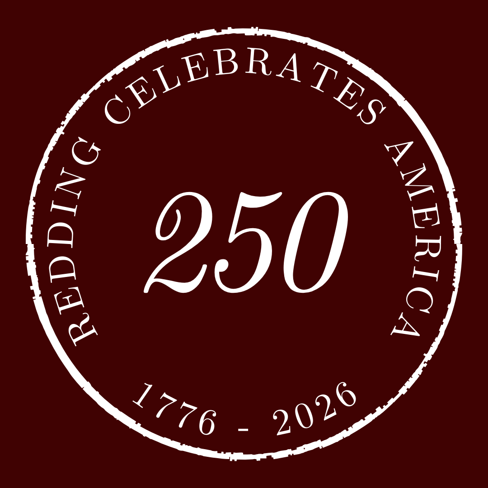

Join us for a day of patriotic music celebrating the 250th anniversary of the United States at Joel Barlow High School.
May 30, 2026 • Joel Barlow High School
Redding Celebrates America 250 is a special community event honoring the 250th anniversary of the founding of the United States.
The event will feature readings from the Declaration of Independence and a concert of patriotic music performed by the Greater Bridgeport Symphony, including works by Redding’s own Charles Ives, along with popular American music performed in collaboration with students from Joel Barlow High School.
Taking place at Joel Barlow High School, this public concert blends music, history, and community in a local celebration of a national milestone.
Tickets are now available for the Redding 250 Concert on Saturday, May 30 at Joel Barlow High School.
Joel Barlow High School • Main Event
Saturday, May 30 • 7:00 pm
Join us for our community celebration of America’s 250th anniversary, featuring the Greater Bridgeport Symphony, music by Charles Ives, patriotic selections, and student performers from Joel Barlow High School.
This special event brings together music, history, and community in a local celebration of a national milestone.
Tickets are on sale now for this special community concert.
As featured in the Redding Sentinel .